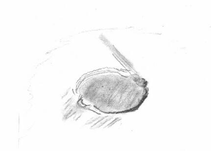

SJAA
Ephemeris
|
SJAA Ephemeris |
MooningDavid North |
Once again, it's showtime for moon goons - and a time of great suffering for our farsighted deepsky cousins, as this month has two full moons.
Why is March "showtime?" Because this is when the moon is at its greatest elevation at first quarter, which is the easiest phase for most folks to see.
Does elevation count for all that much? Yes, yes and yes. The less air you look through, the better the image. Even on mediocre nights in March, the 1QM can look better than great nights in late summer... and the average of the first half of the lunation is all good, so it's best to try for the whole shebang, though I'm only going to cover four days with any detail...
Sunset is around 6:30, and the first quarter Moon is best viewed around sunset. Most folks are home from work around then. Also, there is just a lot of good stuff to see around the first quarter.
What is this good stuff, you ask? Let's take it day-by-day:
March 22 is really a bit before first quarter, so get out as soon as you can - the moon will already be sinking when the sun sets... but it will be very high.
First comes the well-defined crater pair Aristotle and Eudoxis. Some close examination may show the secondary impacts north of Ari, and the entire area is just plain nice.
But the real theme of the night is rilles: from the south end of Serenitatis (rimae Menelaus and Plinius) down the western edge of Tranquilitatis (the end of Ariadeaeus - which you can watch emerge as the evening passes - plus Maclear, Sosigenes, Ritter and Hypatia rilles) and the rille in Cyrillus (part of the extraordinary crater group that also includes Theophilus and Catharina - note the sharp terraces in the former).
And just for pure "looks" don't miss the Altai Scarp, the "shock ring" mountain range that surrounds western Mare Nectaris.
March 23 is almost first quarter, and things will be popping right at sunset.
Start with the Alpine Valley, cutting through (of course) the Montes Alpes like a bad gash. The "prime target" here for masochists is the rille in the middle of the valley. In good seeing, relatively modest scopes can see it, and in anything less it "just ain't there."
But the heartstoppers tonight are a pair of rilles: Hyginus and Triesnecker. These are perhaps the finest examples of two different kinds of rilles on the moon.
Remember Ariadeaeus from last night? Find it again and it will lead you to Hyginus, which will look like a widespread V with a crater at the vertex. If you look close, you'll see strings of tiny craters in the arms! This is "catenoid" after the word "catena" which means, well, a string of craterlets.
Just south and west you'll find the slightly more elusive Triesnecker complex: there are up to 15 or more branches visible in this crosshatched area, so stay with it! You can spend a goodly time here and keep seeing more...
For lesser rilles, I like Rima Archytes (small, in Frigoris on the terminator) Rimae Theaetetus (a small group just east of Aristillus) and Rimae Fresnel (on the east edge of Autolycus in Palus Putredinus).
March 24 is the actual first quarter, and elevations will be theoretically at their best (but you won't see the difference).
Drop by Plato for a minute or two and see how many little craterlets you can spot in the floor. If you get five, your seeing is pretty good and so is your scope.
|  |
In eastern Mare Imbrium, there is a lovely arc of rilles toward the mountains from Archimedes: Bradley rille is the easier, but Hadley is more fun since it's the only rille men have ever looked at up close (Apollo 15).
Find the crater Davy and in the larger, flatter crater next to it you can see a fine chain of craterlets: Catena Davy. Find this and you'll know what a catena is - it's a fun word to toss around.
That large crater with the straight line in it just south of center near the terminator isn't a crater: it's the eastern part of Mare Nubium. And the line is the famous "Straight Wall," a fault where one side fell and went boom. Nearby, you'll see the small crater Birt, and near it Rima Birt, a most suggestive rille if seeing allows.
You can also catch Tycho in harsh light. It's an extremely well-formed crater where you can see terracing in great detail.
And as a final tidbit it's sunrise on Clavius. This is one of the great aesthetic times and places on the moon. Tonight and tomorrow night will show it entirely, and you shouldn't miss the fine arc of craters inside (doesn't look accidental, does it?)
March 25 is an amazing night!
Copernicus!
Nothing more need be said. Find it and look everywhere nearby: it's all right there. Rilles? Gay-Lussac to the north. Catenae? Check Rima Stadius to the north of the crater of the same name. Secondary craters? Just look around. Domes? Look especially to the southeast, but all around - many with central craters. Craters? Copernicus is one of the finest, with delicate terraces and a rich collection of central peaks. Do not miss it!
A bit further south, linger a while on the crater group of Fra Mauro, Bonpland and Parry to the east of Mare Cognitum. They're all flattish sunken (or "ghost") craters with lots of rilles and ripples.
And near Hesiodus, you'll see the first part of a rille that will lead you, tomorrow night, to Palus Epidemarium and another amazing sight! Oh, and also tomorrow is sunrise on Sinus Irid(i)um - maybe the aesthetic event on the moon, with the last part of its arc hanging off into space!
By no means limit what you look at to this short list, or these few days. If you get clear weather, this is an incomparable time to shoot the moon, and I guarantee there will be much, much more than I'm mentioning here.
| David North; last updated: February 05, 2002 | Prev Next |